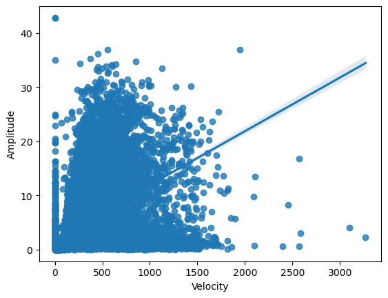
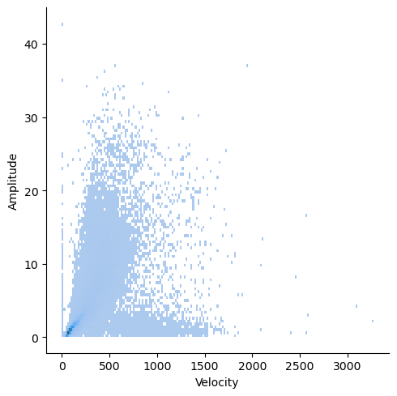

My data was taken from a dataset at a hospital where patients had their eye movements tracked and recorded. The full dataset can be found here.
| Measure | Value | Takeaway |
|---|---|---|
| Median Velocity | 230.0 | This shows that generally, a person's eye (with resistance for outliers) moving from point to point during the experiment moves at a fairly large speed. |
| Median Amplitude | 2.75 | This shows that generally, a person's eye (with resistance for outliers) moving from point to point during the experiment moves at a fairly forceful rate, and will generally have to correct for moving past the point. |
| % of People who experienced chronostasis | 1.84% | This shows that in regular life (this dataset was just simple eye testing at a hospital), the probability of actually experiencing chronostasis is fairly low. However, this can be easily manipulated by intensely focusing on a point, and then quickly shifting your focus to another object, such as a clock. If the second hand seems to freeze for a second, then you have experienced a form of chronostasis. |
 
Chronostasis is a phenomenon where it feels like you are “stopped in time”. This generally occurs when your brain has to overcorrect after an eye movement. When analyzing the data, we can see that there is a positive association between velocity and amplitude, meaning that the faster somebody moves their eye, the more likely they are to experience a chronostasis phenomenon, due to their eye using more force and having to overcorrect. I calculated the amount of people with an amplitude above 20.0, which is the amplitude that it generally takes to have a substantial amount of correction in the brain. I then calculated the percentage of people who had the experience of chronostasis, and I found that 1.84% of people experience chronostasis in daily life. However, this can easily be manipulated by intensely focusing on a point, and then quickly shifting your focus to another object, such as a clock. If the second hand seems to freeze for a second, then you have experienced a form of chronostasis.